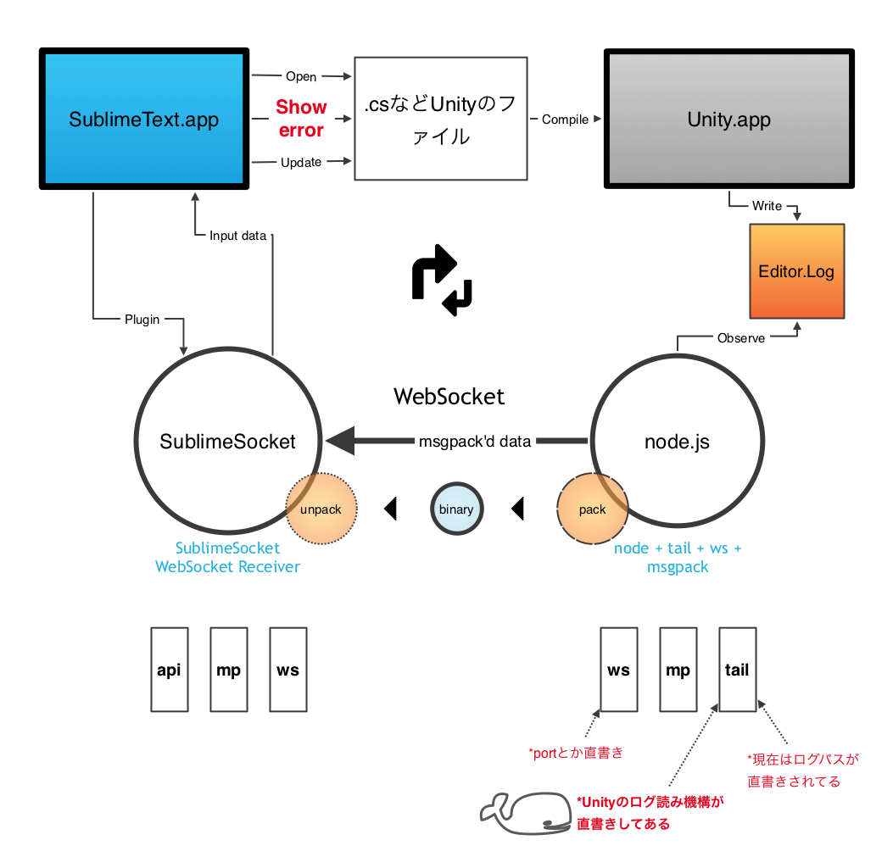

msgpackハッカソンでSublimeSocketにmp用の受け口を作った
のと、Unity-SublimeText間の連携でそれを使用した話
概要
「AkkaのActor関連でmsgpackを扱ったコードを書く」と言ったな、、あれは嘘だ。
MessagePackオンラインハッカソン #1
http://www.zusaar.com/event/505055
に参加しました。
1.Obj-Cのメッセージングしてるツールのサーバ間での通信をMsgPackに変える
2.自社で使ってるAkka Actorでの通信モジュールに、MsgPackを使う
3.SublimeTextのプラグインSublimeSocket(SS)に、MsgPackでの受け入れクチを付ける
の、中から、3.SublimeSocketを選択。
理由は、一番がんばらずに動く物をまるっと公開できるから、、 あと、ちょうど、Unity-ST間の連携用のコードを書くきっかけが欲しかったので。
目標：
msgpack対応でバッファデータとかをUnity > node tail > SSで受け取り > SublimeTextに表示
特に表示する内容=データソースを、Unityのエラー、とした。
完成図
こんなかんじになった。msgpack'd dataあたりが今回作った部分。

以下制作過程
In&Out
サンプルとして、nodeで適当なファイルをtail、その結果をSublimeTextのコンソールへと出す、というのをやってみる。
node > WebSocket > SublimeText
が、
node > (msgpack pack) WebSocket (msgpack unpack) > SublimeText
になる筈。
各環境でのmsgpack
node側から入ったデータが、Python側に出てくる、というだけ。
そもMsgPackの受け側作った事無いので、どうした物かな的なところ体当たり。
msgpack node側
installから。
https://github.com/pgriess/node-msgpack
node wsでのbinary送信で嵌ってた。
nodeのwsのオプションでの明示に切り替え。他に、デフォだと入ってないOriginとかもそこで付けられた。
ChromeとかだとOrigin=nullでも送ってきたりするので、デフォルトでもOrigin=nullとかで送ってもらった方が良いのかな、、
msgpack Python側
こちらもinstallから。
https://github.com/msgpack/msgpack-python
easy_install msgpack-python
なのですが、今回はST2の環境(Python2.6)で動かしたいので、
easy_install-2.6 msgpack-python
早くST3こねーかなー。3.3全力で使いたい。
成果物
UnityのエラーをSublimeText上に表示できるようになった。
msgpackは、Unityから出力されたLog用のDataを固めるために使っている。
の、msgpack branch。
https://github.com/sassembla/SublimeSocket/tree/msgpack
説明が最高にアレなのでムビとった。
http://www.youtube.com/watch?v=JSdpa_LXa8c&feature=youtu.be
内容
太字3,4が今回のハッカソンで作った部分
1. Unityを起動 > STでファイル開く > SublimeSocket起動 >
2. node tail起動 >
3. Unityのビルド結果ログからパターン出して、msgpackで固めてWebSocketでSublimeSocketに送信 >
4. SublimeSocket側で複合 >
5. STで表示される
実際にはnode tail
https://gist.github.com/4692531
の部分に、Unityのエラーログを見て、SublimeSocketの表示APIを叩くところまでが書いてある。
実際のnode tailコードはこのへん
https://github.com/sassembla/SublimeSocket/blob/msgpack/tool/nodeTailSocket/node_tailsocket.js
死にたくなるくらい汚い書きかたしてある。
この辺の書き方をどうすれば良いか、っていうのも、考えるべき事の一つ。
ここでSTへのsendの流量をしぼらず、全開素通りにして、SublimeSocket側でAPIに割り当てるとかも考えたけど、
まだプラグイン側の構造が全然二次的にプラガブルでないんで、ちょっとこう、、node側で絞って投げる形にした。
SublimeSocketにはAPIが仮設してあって、 command : JSONDATA という形でデータを与えると、エラー表示とか値表示とかが
リモートから入力できるようにしてある。
その辺のデータを、nodeから直に入力。
line28
eval:[\"sublime.message_dialog('"+data+"')\
とかで、data文字列をSublimeText側にダイアログとして表示できる。
今回は実はDialogはバグって動いてない。(STへのデータ全体の投入が0.1秒以内同時になっちゃって、STが怒った。)
line42
"eval:[\"self.setLineFromTo("+dataArray[3]+",lines)\",\"regions.append(active_view.line(lines[0]))\",\"active_view.add_regions('hereComes', regions, 'comment', 'dot', sublime.DRAW_OUTLINED)\"]";
は、メソッド名を渡してST側でevalして順に実行してる。
エスケープシーケンスェ、、、痛々しい。
JSONなのでその辺の組み立て機構を作れば良いのだと思う。
で、シリアライズするだけ。
lines配列にdataArray[3]を渡して、 > len(dataArray) = 1, 中身はST内の行番号
次の命令でlines[0]を使ってハイライト領域をSTに登録、
最後に表示をonにしている。
感想
msgpack Python 楽しいですねこれ、、、らくだし、、
Pythonで使うときに、自分が作ってる物がSublimeTextのプラグインなので、
どうやってeasy-install促すかなーとか考えが全く及んでなかった事があって、こう、アレでした。
考えさせられた。もっと考えんと。
フィルタの実例その１が作れたので、あとはUnityのエラーログの解析を、どうやって
あとnodeのwsの使い方思いっきり間違えた。Readme読めと。。
おまけで、nodeでのtail&WebSocketツールが思ったよりも使いやすいので、
自前で適当にWebSocketと繋ぐファイル監視はこのへんをデフォルトにしようかなと思ったり。
ws、tail、msgpack モジュールに依存。
ツッコミ等あれば、@toru_inoueまで。